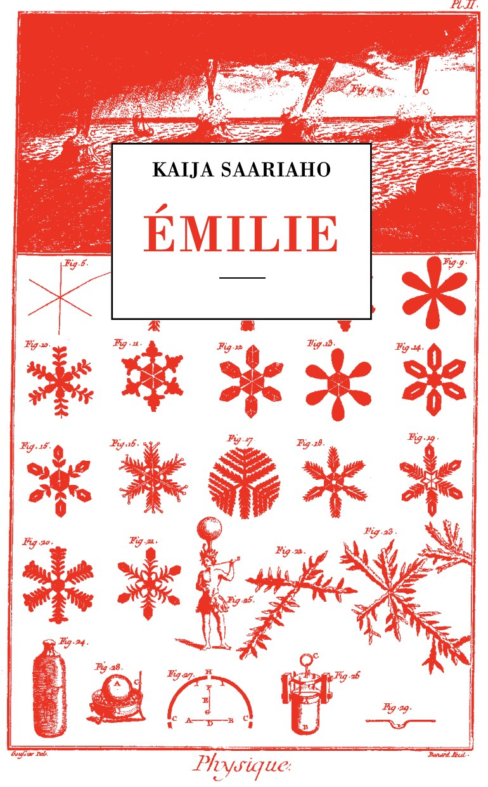
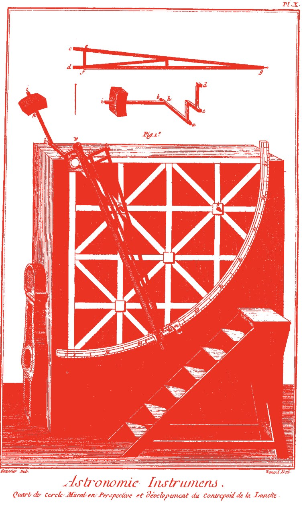

01やったことのないことを、奏楽堂で
――奏楽堂企画に応募したきっかけを教えてください。
菊地奏楽堂企画は毎年公募されていて、いつか応募したいと思っていました。去年は学部4年で、これが最後のチャンスだと。やりたかったのは、奏楽堂でまだ誰もやっていないこと、そして大きなことです。現代のオペラをやりたいと考えて、いつも一緒に公演をつくっている上條くんや佐藤くんを誘いました。
――本番のおよそ1か月前、奏楽堂で天井音響反射板が落下し、公演は中止になりました。
菊地そのときは別の仕事で山梨にいて、上條くんからのLINEで知りました。前の公演が軒並み中止になり、やがて担当の先生から中止の連絡が届きました。本当にショックでした。
――そこから、どのように再び動き出したのですか。
菊地奏楽堂は復旧のめどが立たなかったので、別のホールを探すことにしました。そこで出会ったのがシアター1010です。演劇でよく使われるホールで、オペラにも合っている。いちばん怖かったのは、すべてが白紙になることでした。つくり上げてきたものを、形を変えてでも届けられる。いまは何より、安心しています。
02女性が中心に立つオペラ『エミリー』
――前半に上演する『エミリー』について教えてください。
菊地2年ほど前に観たモノオペラが、とてもかっこよかったんです。主演も演出に関わっていたのも若い女性で、そこから「女性が主演のオペラをやろう」と決めました。
作曲者のカイヤ・サーリアホはフィンランドの女性作曲家で、主人公のエミリーも女性。指揮の高橋星花さんも、代表の私も女性です。若い女性がこういう大きなことを引っ張ることには意味があると思っています。
――公演を支えるメンバーについて教えてください。
菊地演出は上條晴翔くんです。学部1年のころから4年間、二人でいろいろな公演をつくってきました。もともとオーボエで入学し、いまは美術の大学院で先端芸術表現を学んでいます。ひとつひとつを思慮深く、丁寧につくっていける人です。
字幕の映像は株式会社WEBB。話題のホラー映画をつくっている会社で、代表の吉岡一靖くんは学部1年からの友人です。同世代でこのクオリティのものをつくれる人がいるのかと驚きました。前回は映像が完成する前に中止になったので、今回ようやく姿を現します。
03ソリストが埋もれていくコンチェルト
――佐藤さん、自己紹介をお願いします。
佐藤東京藝術大学4年の佐藤伸輝です。インターネット文化やアジアの表象にまつわる創作をしていて、最近は映像もつくっています。菊地さんとは即興の授業で出会い、人生で初めての即興ライブを一緒にやって以来の付き合いです。
――菊地さんから見て、佐藤さんはどんな作曲家ですか。
菊地《Asian Music Guide》の初演を聴いたとき、こんなものをつくれる人がいるんだと衝撃を受けました。決定的だったのは、モーニングコンサートでのオーケストラ作品。エレクトロニクスの印象が強い人が、アコースティックだけでここまで色鮮やかな世界をつくるのかと。彼にフルート・コンチェルトを書いてほしいと、そこで強く思いました。
――どんなコンチェルトをつくっていますか。
佐藤コンチェルトは、西洋音楽の制度のなかでも象徴的な形式です。コンクールの最終ラウンドで弾かれるように、奏者の技量や個性を発露するためのプラットフォームだと思います。
だから現代に書くなら、その逆をやりたかった。ソリストがオーケストラを率いるのではなく、周りの環境に埋もれていく。過去のフルート・コンチェルトのような響きから、ディコンストラクテッド・クラブのようなインダストリアルな音まで。そのキメラのような渦のなかで、主体性が偶発的に、一時的にだけ生まれる。
中止で時間ができたことで、この構想をもう一段突き詰められました。映像作家でVJのJACKSON kakiさんに、菊地さんの巨大なアバターをつくってもらっています。それが亡霊のようにオーケストラ全体にまとわりつき、フルーティストの実体は消えていく。スターへの羨望が過剰になったとき、アイコンだけが祀り上げられ、身体が置き換えられていく。その恐怖が、この曲の底に流れています。
04ひとつの曲を、三人で書く
――今回のコンチェルトは、複数の作家による共作だそうですね。
佐藤はい。オーケストラを僕、エレクトロニクスをたこミさん、映像をJACKSON kakiさんが担い、三人でひとつの作品をつくります。現代音楽では「作家性」が強調され、作った人が頂点に立ち、演奏した人がその下に来る。その構造を少し解体してみる試みです。
――たこミさんはどんな方ですか。
佐藤音楽に限らず、インスタレーションや映像、ダンスまで横断する人です。音楽を、それを取り巻くカルチャーや美学ごと捉えている。さまざまな文脈から音を拾い、カオスになるかならないかのバランスを保つ。その感覚が、このコンチェルトにも生きています。
菊地彼らはただコラボするだけじゃない。自分の美学で全体をまとめ上げ、どう見せるかまで計算してつくれる。そこがすごくいいと思っています。
――映像のJACKSON kakiさんについても教えてください。
佐藤「42.195kmの分離する身体」というイベントで知りました。アバターと連動して、生身の人間がマラソンを走り切る。仮想現実をそのまま持ち込むのではなく、生々しい肉体によって、実存がはっきりと示されている。その美学に強く惹かれました。
kakiさんは、舞台という空間の枠組みそのものを意識してつくっている。それは、僕自身が考えている問題とも重なります。制度を壊そうとする行為は、結果的にその制度を強調してしまうことがある。だから今回も、コンチェルトという制度に対抗するのではなく、引き継ぎながら別の方向へ過剰に展開させています。
菊地事故の前は、映像とのコラボは予定していなかったんです。やり直すなら、もっとやりたいことをやろうと。シアター1010の大きなスクリーンに、kakiさんの映像が映し出されます。
05そこにあるはずのない身体
――前半の『エミリー』と後半のフルート・コンチェルト。公演全体を通したテーマはありますか。
佐藤公演全体を貫いているのは、異なるメディア環境における「身体の拡張と喪失」だと思っています。もう少し踏み込んで言えば、そこに存在しないはずの身体が、別の誰かの身体を通して現れること。ある種の憑依や、擬態に近い現象です。
エミリー・デュ・シャトレは18世紀に生きた人物で、当然ながら今ここには存在しません。それでもオペラという形式を通して、彼女は現代の歌手の身体と声を借りて、もう一度舞台上に現れる。200年以上前に生きた他者が、ひとりの歌手に憑依するようにして立ち上がるわけです。

Texte_Émilie より

Texte_Émilie より
オペラには、もともとどこか儀式的な性格があると思っています。歌手は物語の登場人物を演じるだけでなく、自分ではない誰かの声や身体を引き受ける。ある意味では、降霊術に近いことが起きている。その意味で、オペラは非常に不思議なメディアだと思います。
これは、西洋音楽の演奏そのものにも通じる問題です。演奏者は、楽譜に書かれた他者の音楽を、自分の身体を使って、いま・ここで鳴らす。自分ではない何かになることと、自分自身の身体でしかそれを実現できないこと。その矛盾が、演奏という制度の根底にあるように感じています。
後半のフルート・コンチェルトでは、この関係が別の方向から現れます。生身の演奏者が巨大な3Dアバターへと変換され、実体のほうがむしろその表象に従属していく。目の前で演奏している菊地さんの身体が、映像のなかに増殖し、オーケストラ全体を覆うような存在になっていくんです。
『エミリー』では、すでに存在しない人間が、別の人間の身体を借りて現れる。フルート・コンチェルトでは、いま目の前にいる人間の身体が、デジタルな表象に置き換えられていく。前者が他者の身体への憑依だとすれば、後者は自分自身の身体からの疎外に近いのかもしれません。
そこにあるはずのない身体が、舞台の上に現れる。あるいは、そこにいるはずの身体が、別の何かに置き換えられてしまう。今回の公演では、その二つの現象がひとつの舞台空間に並置されることになります。
――最後に、この公演についてひとことお願いします。
菊地関わってくれる人たちが、自分の持てるセンスや才能を全部注いでくれています。企画している私自身も、どんな公演になるのかまだわからない。どこまで行けるのか。そこが怖いところでもあり、いちばんワクワクするところでもあります。まだ名前のないものを、いまみんなでつくっているんです。
WELCOME TO...
日程：2026年12月16日（水）
会場：シアター1010（北千住）
演目：カイヤ・サーリアホ『エミリー』／佐藤伸輝・たこミ・JACKSON kaki「フルート・コンチェルト」（新作）
代表・フルート：菊地奏絵／指揮：高橋星花／演出：上條晴翔／字幕映像：株式会社WEBB